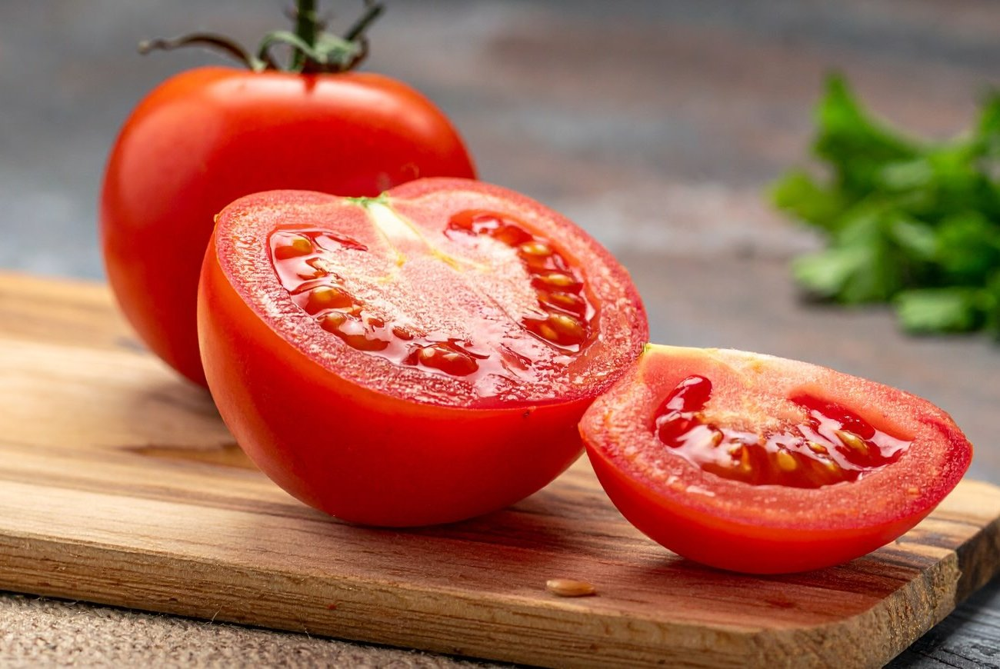

Томаты (помидоры) — это однолетнее или многолетнее травянистое растение вида Solanum lycopersicum семейства Паслёновые, которое возделывается как овощная культура. С ботанической точки зрения съедобный плод томата является многогнёздной ягодой, однако в кулинарии и обиходе его принято считать овощем.